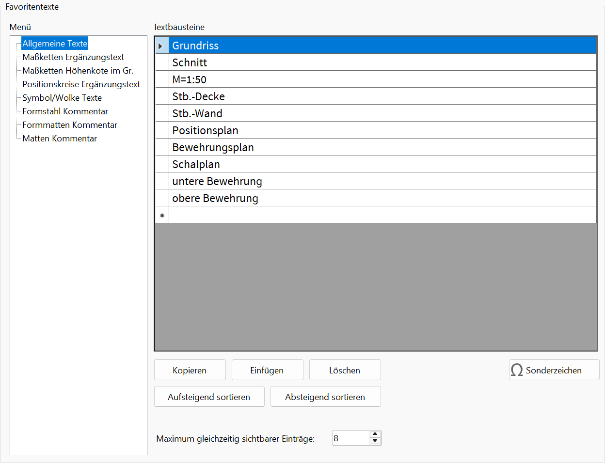
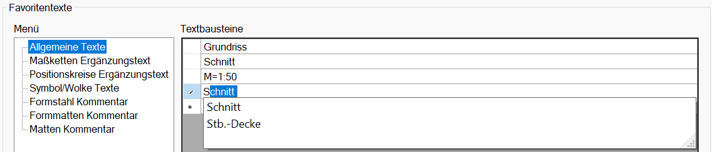
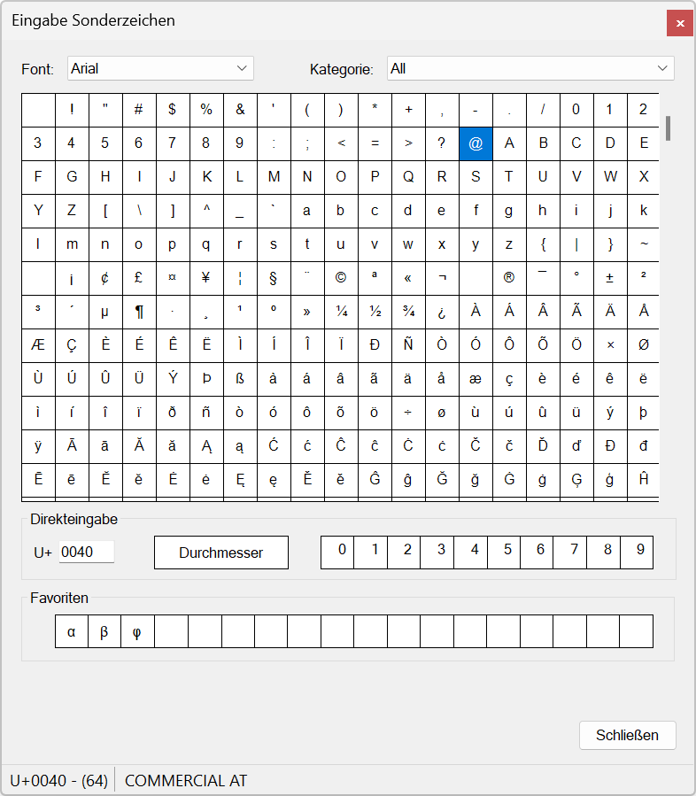
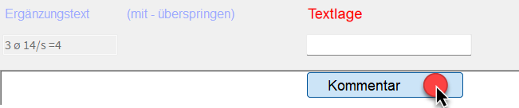

")

Speichern von häufig verwendeten Textbausteinen als Favoritentexte, die während der Texteingabe abgerufen werden können.
 |
|---|
Die Favoritentexte werden unter der Eingabe in einer Auswahlliste angeboten und können per Mausklick in die Eingabezeile übernommen werden. In der Liste stehen sie immer an oberster Stelle, gefolgt von den zuletzt manuell eingegebenen Texten.
Mit der Option Maximum gleichzeitig sichtbarer Einträge können Sie angeben, wie viele Favoritentexte beim Öffnen der Auswahlliste zu sehen sein sollen. Ist die Eingabe geringer als die Anzahl der Einträge, erscheint am rechten Rand der Auswahlliste ein Scrollbalken. Klicken und ziehen Sie den Balken nach unten oder nutzen Sie das Mausrad, um zu den nicht sichtbaren Einträgen zu scrollen.
Um die Liste der Favoriten oder Makrotexte unter der Abfrage einzuklappen, klicken Sie unter der Liste auf die Pfeil-Schaltfläche. Um sie auszuklappen, klicken Sie entweder eine der Überschriften an (Favoriten, Makrotexte) oder klicken Sie auf die Pfeil-Schaltfläche. Mit der Stecknadel-Schaltfläche können Sie die Ansicht der Liste fixieren. Ob die Liste bei erneutem Aufruf ein- oder ausgeklappt angezeigt wird, wird sich für die jeweilige Funktion gemerkt.
|

Die Favoritentexte stehen in folgenden Funktionen zur Verfügung:
·Allgemeine Texte: [Konst 1 | Texte | zeichn/ändern]
·Maßketten Ergänzungstext: [Konst 1 | Maßket | ErgText]
·Höhenkoten im Grundriss Höhentext: [Konst 1 | Maßket | HökoGr]
·Positionskreise Ergänzungstext: [Konst 2 | PosKre | zeichn/ändern]
·Wolke Ergänzungstext: [Konst 2 | Symbol | Wolke]
·Matten Kommentar: [Matten | Texte | KomTxt]
·Formstahl Kommentar: [Formst | BiPos]; [Formst | BiPos | ändern]
·Formmatten Kommentar: [Formma | BiPos]; [Formst | BiPos | ändern]
Favoritentext erstellen
§Wählen Sie im linken Dialogbereich unter Menü, wo der Text hinzugefügt werden soll.
§Klicken Sie in eine freie Tabellenzeile und tippen Sie den Text ein. Bestätigen Sie mit der Eingabetaste.
-Beim Tippen werden Wörter und Ausdrücke vorgeschlagen, die im selben oder einem anderen Menü definiert sind. Mit den Pfeiltasten (unten, oben) können Sie zwischen den Vorschlägen wechseln und den Text weiterbearbeiten. Setzen Sie hierfür den Cursor an die gewünschte Stelle. Mit der Eingabetaste oder durch das Anklicken eines Vorschlags können Sie diesen direkt übernehmen.
-Hochzahlen können Sie über den Nummernblock Ihrer Tastatur einfügen. Halten Sie die Taste Strg gedrückt und tippen Sie die Ziffer ein. Der Nummernblock muss hierfür aktiv sein (Taste Num).
-Durchmesserzeichen können Sie mit der Funktionstaste F10 einfügen (Standardeinstellung).
 |
|
Tipp: |
|
Beim Erstellen können Leerzeichen vor und nach dem Favoritentext hinzugefügt werden. Diese werden beim Einfügen berücksichtigt. |

Sonderzeichen einfügen
Beachten Sie, dass nicht alle Schriftarten die gleichen Zeichen enthalten. Das kann dazu führen, dass bei einer nachträglichen Änderungen der Schriftart bestimmte Sonderzeichen nicht dargestellt werden. Beispielsweise enthält die Schriftart "Arial" Bruchzeichen, die Schriftart "ISO" hingegen nicht.
§Klicken Sie den zu bearbeitenden Text an, um ihn zu markieren.
§Klicken Sie im unteren Dialogbereich auf Sonderzeichen.
§Setzen Sie den Cursor an die Stelle, an der Sie das Sonderzeichen einfügen möchten.
§Klicken Sie in der Tabelle das Sonderzeichen an, um es an der Cursorposition einzufügen.
-Sie können den Dialog geöffnet lassen, den Text weiterbearbeiten und weitere Sonderzeichen einfügen.
-Der Wechsel zu einem anderen Textbaustein oder in ein anderes Menü ist möglich, um Sonderzeichen einzufügen. Der Dialog bleibt dabei geöffnet. Doppelklicken Sie einen Text an, um ihn bearbeiten zu können, und setzen Sie den Cursor an die Einfügeposition des Sonderzeichens. Fügen Sie anschließend das Sonderzeichen ein.
 |
Font Auswahl der Schriftart. Die Zeichentabelle zeigt die codierten Zeichen der Schriftart an. Kategorie Auswahl der Sprach- und Schreibsysteme. Wenn in der Kategorie-Auswahl All gewählt ist, werden alle Zeichen einer Schriftart angezeigt. Wenn Sie eine abweichende Kategorie auswählen, werden nur die Zeichen dieser Kategorie angezeigt. Zeichentabelle Wenn Sie ein Sonderzeichen anklicken, wird dieses in die Tabellenzeile übernommen. Direkteingabe U+ Eingabe des Unicodes in hexadezimaler Schreibweise und Unicode-Anzeige des angeklickten Sonderzeichens. Eingaben können mit der Eingabetaste oder der Tabulatortaste bestätigt werden. Das entsprechende Sonderzeichen wird in der Zeichentabelle hervorgehoben. Ob das entsprechende Zeichen vorhanden ist, hängt von der jeweiligen Schriftart ab. Zulässig sind Werte in den Bereichen 0 ... 9 und A ... F. Bei einer falschen Eingabe erscheint ein Warnhinweis Durchmesser Einfügen eines Durchmesserzeichens. Hochzahlen Einfügen von Hochzahlen. Favoriten Ziehen Sie ein häufig genutztes Zeichen per Drag&Drop auf ein freies Feld. Ist das Feld belegt, wird das Zeichen ersetzt. |

Favoritentext ändern
§Klicken Sie den zu bearbeitenden Text an.
§Geben Sie den neuen Text ein, um den ausgewählten Text zu ändern, oder setzen Sie die Einfügemarke durch Doppelklick an die Stelle, an der Sie den Text bearbeiten möchten. Bestätigen Sie die Eingabe mit der Eingabetaste.
Favoritentext kopieren und einfügen
Die Schaltfläche Einfügen fügt einen oder mehrere kopierte Texte immer in neue Zeilen nach der letzten Tabellenposition ein.
§Wählen Sie den oder die zu kopierenden Favoritentexte aus:
Einzelauswahl |
·Klicken Sie einen Favoritentext an. |
Mehrfachauswahl |
·Um benachbarte Favoritentexte im Block auszuwählen: -Halten Sie die Umschalttaste gedrückt und klicken Sie die erste Zelle an. Klicken Sie anschließend die zweite Zelle an, um den Tabellenbereich zwischen den angeklickten Zellen auszuwählen. -Lassen Sie die Umschalttaste los. Die Zeilen bleiben markiert. ·Um nicht benachbarte Favoritentexte auszuwählen: -Halten Sie die Strg-Taste gedrückt und wählen Sie die Makrotexte aus. -Lassen Sie die Strg-Taste los. Die Zeilen bleiben markiert. |
§Klicken Sie auf Kopieren oder drücken Sie Strg+C, um den Text in die Zwischenablage zu legen.
§Führen Sie einen der folgenden Schritte aus:
a)Sie können den Text in ein beliebiges Menü nach der letzten Tabellenposition einfügen. Wählen Sie dazu das Menü aus und klicken Sie auf Einfügen.
b)Sie können einen Text in einem beliebigen Menü ersetzen, indem Sie den Text durch einen Doppelklick markieren und mit Strg+V die Kopie einfügen.
Bearbeitungsfunktionen im Kontextmenü Sie können auf die Funktionen Kopieren, Einfügen und Löschen auch über ein Kontextmenü zugreifen. §Klicken Sie in die erste Spalte oder rechts neben den Text, um die Tabellenzeile zu markieren. §Öffnen Sie das Kontextmenü mit einem Rechtsklick und wählen Sie die gewünschte Funktion aus.
|
Favoritentext löschen
§Wählen Sie den oder die zu löschenden Favoritentexte aus:
Einzelauswahl |
·Klicken Sie einen Favoritentext an. |
Mehrfachauswahl |
·Um benachbarte Favoritentexte im Block auszuwählen: -Halten Sie die Umschalttaste gedrückt und klicken Sie die erste Zelle an. Klicken Sie anschließend die zweite Zelle an, um den Tabellenbereich zwischen den angeklickten Zellen auszuwählen. -Lassen Sie die Umschalttaste los. ·Um nicht benachbarte Favoritentexte auszuwählen: -Halten Sie die Strg-Taste gedrückt und wählen Sie die Makrotexte aus. -Lassen Sie die Strg-Taste los. |
§Drücken Sie die Taste Entf oder klicken Sie auf Löschen, um den Text oder die Texte zu entfernen.
Favoritentexte in der Tabelle verschieben
Durch Änderung der Reihenfolge im Dialog werden die Einträge in der Auswahlliste unter der Abfrage neu angeordnet.
§Verschieben Sie eine einzelne oder mehrere Tabellenzeilen an eine neue Position:
Einzelne Tabellenzeile |
·Halten Sie auf einer Tabellenzelle die linke Maustaste gedrückt, und ziehen Sie den Inhalt nach oben oder unten. Eine schwarze Linie zeigt Ihnen an, an welche Position die Zeile verschoben wird. ·Lassen Sie die Maustaste an der Position los, an die der Inhalt verschoben werden soll. |
Mehrere Tabellenzeilen |
·Um benachbarte Tabellenzeilen im Block auszuwählen: -Halten Sie die Umschalttaste gedrückt und klicken Sie die erste Zelle an. Klicken Sie anschließend die zweite Zelle an, um den Tabellenbereich zwischen den angeklickten Zellen auszuwählen. -Lassen Sie die Umschalttaste los. Die Zeilen bleiben markiert. ·Um nicht benachbarte Tabellenzeilen auszuwählen: -Halten Sie die Strg-Taste gedrückt, und wählen Sie die Favoritentexte nacheinander aus. -Lassen Sie die Strg-Taste los. Die Zeilen bleiben markiert. ·Um die Tabellenzeilen zu verschieben: -Klicken Sie eine markierte Zelle an und halten Sie die linke Maustaste gedrückt. Ziehen Sie die Inhalte nach oben oder unten. Eine schwarze Linie zeigt Ihnen an, an welche Position die Zeilen verschoben werden. -Lassen Sie die Maustaste an der Position los, an die die Inhalte verschoben werden sollen. |
Favoritentexte sortieren
Sie können die Favoritentexte so sortieren, dass die Texte in aufsteigender (A bis Z) oder absteigender (Z bis A) alphabetischer Reihenfolge angezeigt werden. Nummern werden alphanumerisch einsortiert.
§Klicken Sie im unteren Dialogbereich entweder auf Aufsteigend sortieren oder auf Absteigend sortieren.
Beispiel: Favoritentext anwenden
Eingabe von Favoritentexten in z. B. [Formst | BiPos | Harfe → Textlage].
 |
§Klicken Sie auf Kommentar.
§Die Favoritentexte werden anschließend unter der Eingabezeile in einer Auswahlliste angezeigt.
§Klicken Sie einen Text an, um diesen in die Eingabe zu übernehmen. Sie können einen weiteren Favoritentext hinzufügen oder Text manuell ergänzen. Die Eingabe von Sonderzeichen ist über die Schaltfläche  möglich.
möglich.
|

§Bestätigen Sie mit der Eingabetaste oder mit Rechtsklick.
Zugehörige Referenz: